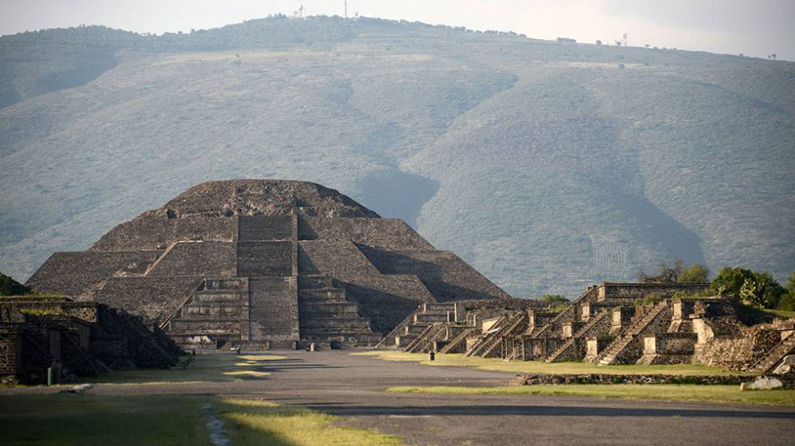

En cuanto al turismo se puede destacar Toluca, en el centro; Valle de Bravo, con diferentes atracciones; Chalma, con sus iglesias, así como los diferentes centros arqueológicos, como Teotihuacán, también destacan mercados populares de artesanía. El estado de México está considerado como el quinto destino turístico de México.A nivel estatal se creó en el año 2005 el proyecto Pueblos con Encanto del Bicentenario, el cual trabaja como apoyo para detonar el desarrollo en algunos municipios con atractivos y vocación turística, hasta la fecha se ha dado dicha denominación a 17 municipios que son: Aculco, El Oro, Ixtapan de la Sal, Metepec, Teotihuacán, Tepotzotlán, Valle de Bravo y Villa del Carbón. A nivel estatal se creó en el año 2005 el proyecto Pueblos con Encanto del Bicentenario, el cual trabaja como apoyo para detonar el desarrollo en algunos municipios con atractivos y vocación turística, hasta la fecha se ha dado dicha denominación algunos municipios que son: Acolman, Amanalco, Amecameca, Ayapango, Otumba, Sultepec, Temascalcingo, Temascaltepec, Tlalmanalco, Tonatico y Zacualpan.
Tiene un importante desarrollo arqueológico, ya que es uno de los principales estados con mayor acervo cultural, al cual se puede acceder sin ninguna restricción, ya que es un patrimonio mexicano, además de que sirve como una buena fuente turística;Teotihuacan, "El lugar donde los hombres se vuelven dioses", es una zona arqueológica localizada en el Estado de México, en los municipios de San Juan Teotihuacan y San Martín de las Pirámides, a 48 km al noreste de la Ciudad de México. Su clima es semi-seco con una temperatura promedio anual de 15 °C. Este antiguo centro ceremonial es uno de los más importantes de la América prehispánica debido a su magistral trazo urbano, a su monumentalidad arquitectónica y a la fuerte influencia política y religiosa que ejerció en su momento hacia otras ciudades; es además, una de las zonas arqueológicas más visitadas y valoradas de la República Mexicana. Hoy en día perduran algunos de las edificaciones prehispánicas más impresionantes del mundo, como la Pirámide del Sol (La segunda más grande de México), La Pirámide de la Luna, el Templo de Quetzalcóatl, entre otros, todos alineados alrededor de una gran avenida de más de 2 kilómetros que se ha dado por llamar "La Calle de los Muertos" debido al gran número de pequeñas pirámides que se encuentran a su paso.
